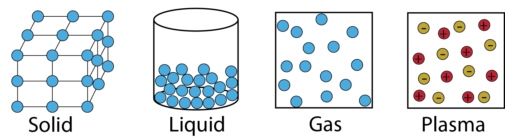

<!--
@license
Copyright (c) 2016 The Polymer Project Authors. All rights reserved.
This code may only be used under the BSD style license found at http://polymer.github.io/LICENSE.txt
The complete set of authors may be found at http://polymer.github.io/AUTHORS.txt
The complete set of contributors may be found at http://polymer.github.io/CONTRIBUTORS.txt
Code distributed by Google as part of the polymer project is also
subject to an additional IP rights grant found at http://polymer.github.io/PATENTS.txt
-->

<link rel="import" href="../bower_components/polymer/polymer-element.html">
<link rel="import" href="../bower_components/paper-card/paper-card.html">
<link rel="import" href="../bower_components/iron-flex-layout/iron-flex-layout-classes.html">
<link rel="import" href="shared-styles.html">

<dom-module id="my-view9">
  <template>
    <style include="shared-styles">
		:host {
			display: block;
			padding: 10px;
		}	
	  
		.flex {
			@apply --layout-vertical;
			@apply --layout-wrap;
		}
		
		.card{			
			margin: 10px;
		}
		
		.red{
			background: red;
			color: white;
		}
		
		.blue{
			background: blue;
			color: white;
		}
    </style>

    <div class="card">
		<h1>States of Matter</h1>
		<div class="card-content flex">
			
			<hr>
			<p>
			The word "matter" refers to everything in the universe that has mass and takes up space. All matter is made up of atoms of elements.
			<br>
			Sometimes, atoms bond together closely, while at other times they are scattered widely.
			<br>
			States of matter are generally described on the basis of qualities that can be seen or felt. Matter that feels hard and maintains a fixed shape is called a solid; matter that feels wet and maintains its volume but not its shape is called a liquid. Matter that can change both shape and volume is called a gas.
			<br>
			Some introductory chemistry texts name solids, liquids, and gasses as the three states of matter, but higher level texts recognize plasma as the fourth state of matter. Like a gas, plasma can change its volume and shape, but unlike a gas, it can also change its electrical charge.
			</p>
		</div>
    </div>
  </template>

  <script>
    class MyView9 extends Polymer.Element {
      static get is() { return 'my-view9'; }
    }

    window.customElements.define(MyView9.is, MyView9);
  </script>
</dom-module>
